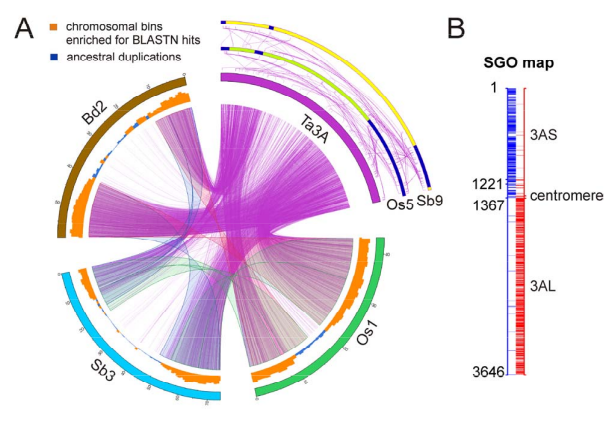
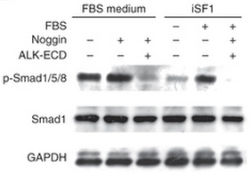

Integrated Genomics Facility (IGF)
Department of Plant Pathology
4024 Throckmorton Plant Sciences Center
Kansas State University
Manhattan, KS 66506
email: hliang AT ksu.edu
Office: (785) 532-2569
Lab: (785) 532-1356
|
|
Hanquan Liang Integrated Genomics Facility (IGF) Department of Plant Pathology 4024 Throckmorton Plant Sciences Center Kansas State University Manhattan, KS 66506 email: hliang AT ksu.edu Office: (785) 532-2569 Lab: (785) 532-1356 |
I am working in the Integrated Genomics Facility, Department of Plant Pathology. We apply Microarray and Next-Generation Sequencing (NGS) technologies to the genetic and genomic research in various species. Affymetrix, Illumina/Solexa and Roche/454 are major platforms we are using. Generate, process and, most importantly, analyze genome-scale data sets.
Use bioinfomatic tools to analyze and interpret genomics data.
I've learned Python, Perl, Java, Matlab/Octave in my spare time and used them in various projects.
Administrator of clusters and servers used in our lab.

Gene cloning, mutation and knock-out, protein expression, immunoblot assay etc.
